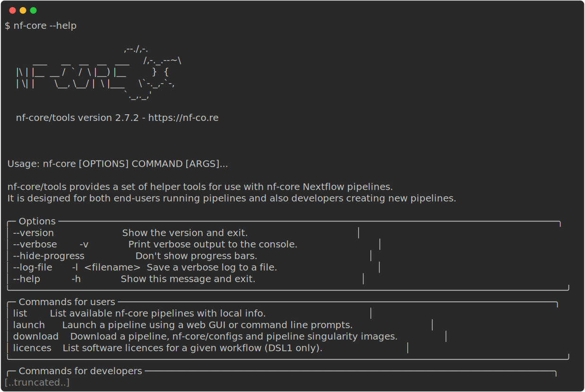

Introduction to nf-core
- Learn about the core features of nf-core.
- Learn how to use nf-core tooling.
- Use Nextflow to pull the
nf-core/rnaseqworkflow
1.2.1. What is nf-core?

nf-core is a community effort to collect a curated set of analysis workflows built using Nextflow.
nf-core provides a standardized set of best practices, guidelines, and templates for building and sharing bioinformatics workflows. These workflows are designed to be modular, scalable, and portable, allowing researchers to easily adapt and execute them using their own data and compute resources.
The community is a diverse group of bioinformaticians, developers, and researchers from around the world who collaborate on developing and maintaining a growing collection of high-quality workflows. These workflows cover a range of applications, including transcriptomics, proteomics, and metagenomics.
One of the key benefits of nf-core is that it promotes open development, testing, and peer review, ensuring that the workflows are robust, well-documented, and validated against real-world datasets. This helps to increase the reliability and reproducibility of bioinformatics analyses and ultimately enables researchers to accelerate their scientific discoveries.
nf-core is published in Nature Biotechnology: Nat Biotechnol 38, 276–278 (2020). Nature Biotechnology
Key Features of nf-core workflows
- Documentation
- nf-core workflows have extensive documentation covering installation, usage, and description of output files to ensure that you won’t be left in the dark.
- CI Testing
- Every time a change is made to the workflow code, nf-core workflows use continuous-integration testing to ensure that nothing has broken.
- Stable Releases
- nf-core workflows use GitHub releases to tag stable versions of the code and software, making workflow runs totally reproducible.
- Packaged software
- Pipeline dependencies are automatically downloaded and handled using Docker, Singularity, Conda, or other software management tools. There is no need for any software installations.
- Portable and reproducible
- nf-core workflows follow best practices to ensure maximum portability and reproducibility. The large community makes the workflows exceptionally well-tested and easy to execute.
- Cloud-ready
- nf-core workflows are tested on AWS after every major release. You can even browse results live on the website and use outputs for your own benchmarking.
It is important to remember all nf-core workflows are open-source and community driven. Most pipelines are under active community development and are regularly updated with fixes and other improvements. Even though the pipelines and tools undergo repeated community review and testing - it is important to check your results*.
1.2.2. Events
nf-core events are community-driven gatherings that provide a platform to discuss the latest developments in Nextflow and nf-core workflows. These events include community seminars, trainings, and hackathons, and are open to anyone who is interested in using and developing nf-core and its applications. Most events are held virtually, making them accessible to a global audience.
Upcoming events are listed on the nf-core event page and announced on Slack and Twitter.
1.2.3. Join the community!
There are several ways you can join the nf-core community. You are welcome to join any or all of these at any time!


The nf-core Slack is one of the primary resources for nf-core users. There are dedicated channels for all workflows as well as channels for common topics. If you are unsure of where to ask you questions - the #help and #nostupidquestions channels are a great place to start.
If you have questions about Nextflow and deployments that are not related to nf-core you can ask them on the Nextflow Slack. It’s worthwhile joining both Slack groups and browsing the channels to get an idea of what types of questions are being asked on each channel. Searching channels can also be a great source of information as your question may have been asked before.
Joining multiple nf-core and Nextflow channels is important to keep up to date with the latest community developments and updates. In particular, following the nf-core and Nextflow Twitter accounts will keep you up-to-date with community announcements. If you are looking for more information about a workflow, the nf-core YouTube channel regularly shares ByteSize seminars about best practises, workflows, and community developments.
Join the nf-core Slack and fill in your profile information. If you’re joining the nf-core Slack for the first time make sure you drop a message in #say-hello to introduce yourself! 👋
Follow this link to join the nf-core Slack. Follow the instructions to enter your credentials and update your profile. Even if you are already a member of the nf-core Slack, it’s a great time to check your profile is up-to-date.
1.2.4. nf-core tools
This workshop will make use of nf-core tools, a set of helper tools for use with Nextflow workflows. These tools have been developed to provide a range of additional functionality for using, developing, and testing workflows.
nf-core tools is written in Python and is available from the Python Package Index (PyPI):
pip install nf-coreAlternatively, nf-core tools can be installed from Bioconda:
conda install -c bioconda nf-coreThe nf-core --version option can be used to print your version of nf-core tools:
nf-core --versionFind out what version of nf-core tools you have available using the nf-core --version option. If nf-core tools is not installed then install it using the commands above:
Use the nf-core --version option to print your nf-core tools version:
nf-core --versionIf you get the message “nf-core: command not found” - install nf-core using the commands above:
pip install nf-coreAdd the path to the installed scripts and tools to your ~/.bashrc file:
- Open your ~/.bashrc file:
nano ~/.bashrc- To the bottom of the file add
export PATH=$PATH:/home/training/.local/binSave and close the file with
ctrl+Sthenctrl+X:The run:
source ~/.bashrcUse the nf-core --version option to print your nf-core tools version:
nf-core --versionnf-core tools are for everyone and has commands to help both users and developers. For users, the tools make it easier to execute workflows. For developers, the tools make it easier to develop and test your workflows using best practices. You can read about the nf-core commands on the tools page of the nf-core website or using the command line.
Find out what nf-core tools commands and options are available using the --help option:
Execute the --help option to list the options, commands for users, and commands for developers:
nf-core --help
nf-core tools is updated with new features and fixes regularly so it’s best to keep your version of nf-core tools up-to-date.
1.2.5. Executing an nf-core workflow
There are currently 80 workflows (April 2023) available as part of nf-core. These workflows are at various stages of development with 49 released, 19 under development, and 12 archived.
The nf-core website has a full list of workflows, as well as their documentation, which can be explored.
Each workflow has a dedicated page that includes expansive documentation that is split into 7 sections:
- Introduction
- An introduction and overview of the workflow
- Results
- Example output files generated from the full test dataset
- Usage docs
- Descriptions of how to execute the workflow
- Parameters
- Grouped workflow parameters with descriptions
- Output docs
- Descriptions and examples of the expected output files
- Releases & Statistics
- Workflow version history and statistics
Unless you are actively developing workflow code, you don’t need to clone the workflow code from GitHub and can use Nextflow’s built-in functionality to pull and a workflow. As shown in the introduction to Nextflow, the Nextflow pull command can download and cache workflows from GitHub repositories:
nextflow pull nf-core/<pipeline>Nextflow run will also automatically pull the workflow if it was not already available locally:
nextflow run nf-core/<pipeline>Nextflow will pull the default git branch if a workflow version is not specified. This will be the master branch for nf-core workflows with a stable release. nf-core workflows use GitHub releases to tag stable versions of the code and software. You will always be able to execute a previous version of a workflow once it is released using the -revision or -r flag.
Use Nextflow to pull the latest version of the nf-core/rnaseq workflow directly from GitHub:
Use Nextlfow to pull the rnaseq workflow from the nf-core GitHub repository:
nextflow pull nf-core/rnaseq
- nf-core is a community effort to collect a curated set of analysis workflows built using Nextflow.
- You can join/follow nf-core on multiple different social channels (Slack, YouTube, Twitter…)
- nf-core has its own tooling that can be used by users and developers.
- Nextflow can be used to
pullnf-core workflows.